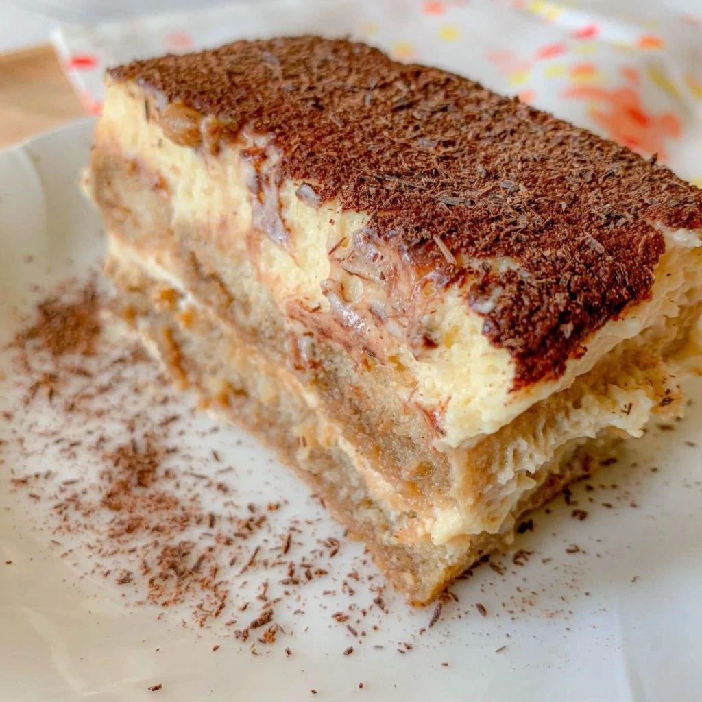

Tiramisú del Abuelo
This is my grandpa’s tiramisú recipe and the only one that counts. I
wrote it in 2017 and the piece of paper is covered in coffee. I love
this recipe and can’t recommend it enough.

Ingredients
- Ladyfingers
- 3 4-ounce espressos (4 “piccoli”)
- 1/4 cup Marsala wine
- 1-2 tablespoons Irish cream liqueur (optional, e.g., Baileys)
- 1 tablespoon unsweetened cocoa powder
- 3 eggs (separate whites and yolks)
- 3 tablespoons sugar
- A pinch of salt
- 400 grams mascarpone cheese
- 1 tablespoon dark chocolate, shredded for topping
- 1/2 tablespoon instant coffee for topping
Procedure
-
In a container, combine the espressos and Marsala wine. Add 1-2
tablespoons of Irish cream liqueur if desired.
-
Soak the ladyfingers in the coffee mixture, then layer them in a glass
or ceramic pan. Sprinkle with 1 tablespoon of cocoa powder.
-
For the filling, you’ll need two separate mixtures:
-
A: In a mixing bowl, combine 3 egg yolks with 3
tablespoons of sugar. Mix until creamy (about 10 minutes). Set
aside.
-
B: In a clean mixing bowl, whisk the 3 egg whites
with a pinch of salt until stiff peaks form (about 10 minutes).
-
Gently fold the egg whites into the yolk mixture until fully combined.
-
Add the mascarpone cheese to the mixture (make sure it’s at room
temperature) and fold until smooth.
-
Pour the mascarpone mixture over the ladyfingers. Top with shredded
dark chocolate and a sprinkle of instant coffee.
- Refrigerate overnight before serving. Enjoy!